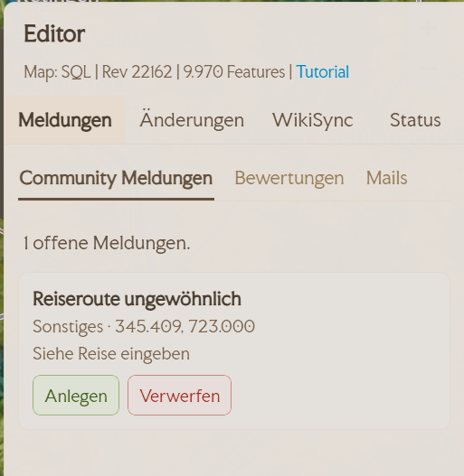
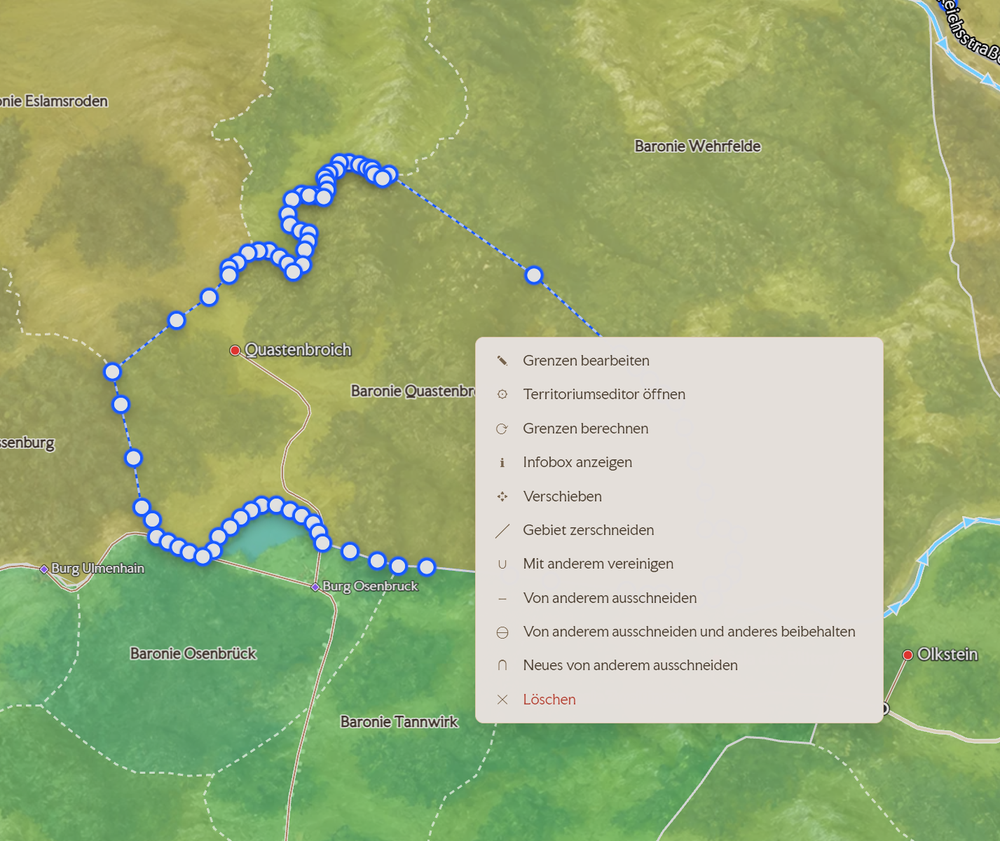
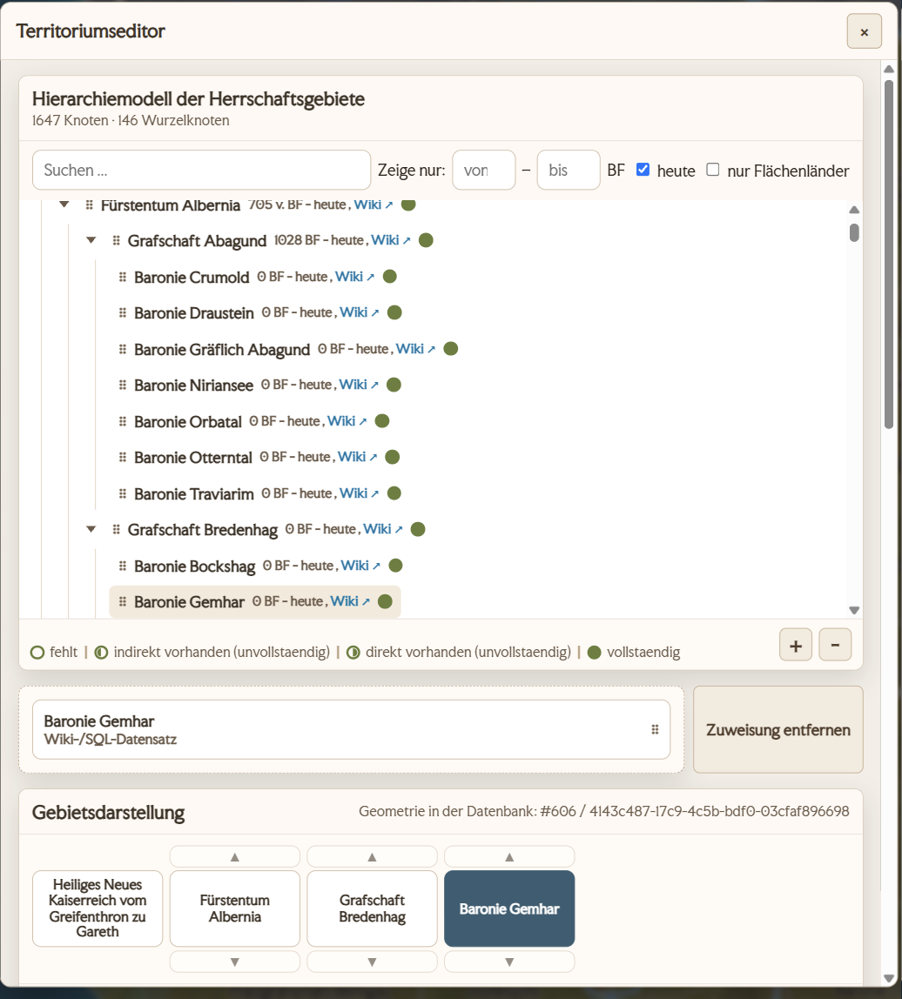
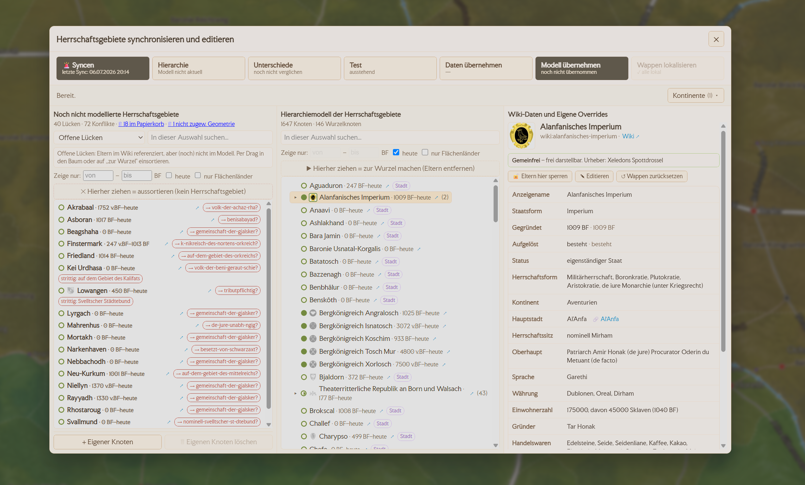
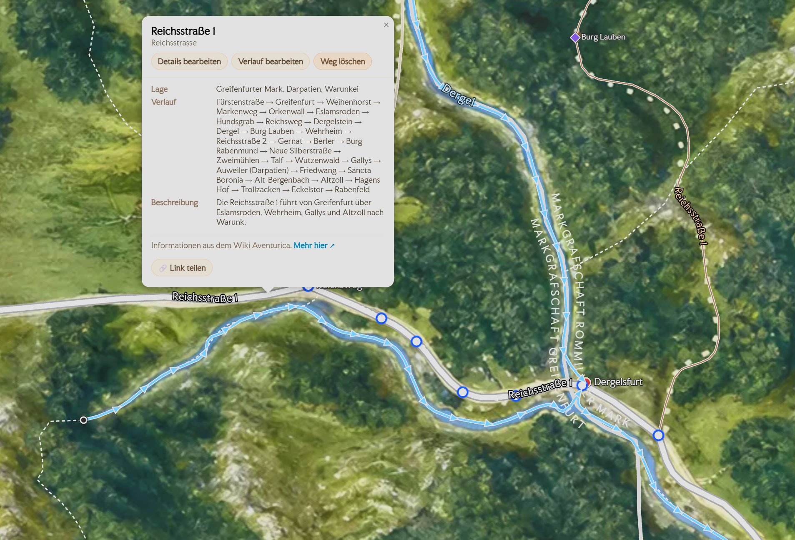
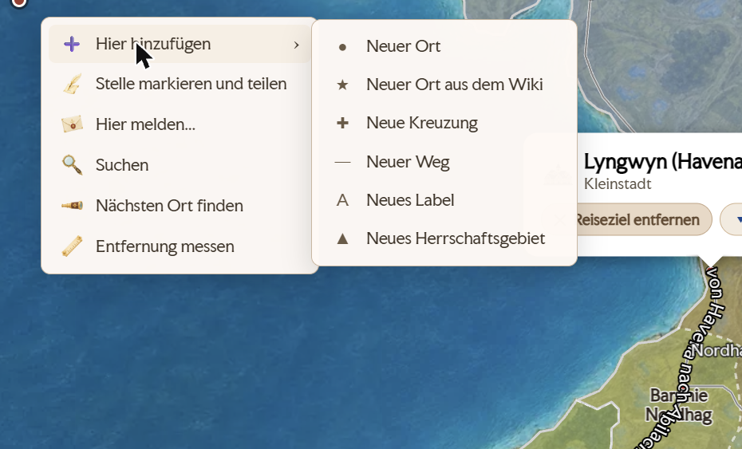

Editor-Handbuch
Willkommen im Editor-Team von Avesmaps. Diese Seite erklärt Schritt für Schritt, wie und wo du was machst. Sie ist zum Nachschlagen gedacht — du musst sie nicht am Stück lesen.
Erste Schritte
Als Editor pflegst du die Karte von Aventurien: Orte, Wege, Flüsse, Regionen, politische Grenzen — und ihre Verknüpfung mit dem Wiki Aventurica. Alles, was du speicherst, geht sofort live.
Zugang & Anmelden
Dein Konto richtet der Betreiber persönlich für dich ein — eine Selbst-Registrierung gibt es nicht. Benutzername und Passwort bekommst du direkt von ihm.
- Öffne avesmaps.de/edit/ ↗ im Browser.
- Gib Benutzername und Passwort ein und klick auf „Anmelden".
- Danach siehst du oben deinen Namen und deine Rolle sowie „Abmelden"; darunter läuft die Karte im Bearbeiten-Modus.
Die drei Flächen
Im Bearbeiten-Modus arbeitest du auf drei Flächen. Wenn du weißt, welche wofür zuständig ist, findest du alles Weitere von selbst.
- Die Karte. Hier klickst und ziehst du. Linksklick auf ein Objekt öffnet seine Infobox, Rechtsklick öffnet das Kontextmenü zum Anlegen.
- Das Infopanel rechts. Ein Linksklick auf Ort, Weg, Region oder Gebiet zeigt hier alles, was zu diesem Objekt bekannt ist — und im Bearbeiten-Modus den Knopf „Bearbeiten". Von hier aus startest du fast jede Änderung.
- Das „Editor"-Panel. Öffnet sich über den Button „Editor" und hat vier Reiter: Meldungen, Änderungen, WikiSync und Status. Hier liegt die Arbeit, die zu dir kommt (siehe Aufgaben), und der Einstieg in die vier Sync-Editoren.

Oben rechts in der App sitzen außerdem der Hell/Dunkel-Umschalter und der DE|EN-Sprachumschalter. Beide gelten nur für deine Ansicht und ändern nichts an den Daten.
Rollen & Rechte
Es gibt drei Rollen. Sie bestimmen, was du darfst:
- reviewer — darf Meldungen und Bewertungen prüfen.
- editor — darf zusätzlich die Karte bearbeiten (Orte, Wege, Territorien, Wiki-Verknüpfung …).
- admin — darf alles, inkl. Verwaltung (z. B. Konten anlegen).
Die goldenen Regeln
Vier Sätze, auf die sich alles andere zurückführen lässt. Sie stehen bewusst nur hier — alle anderen Abschnitte verweisen zurück.
- Das Wiki Aventurica ist unsere Datengrundlage. Im Zweifel richten wir die Karte nach dem Wiki aus.
- Kleine, sorgfältige Schritte. Lieber eine Sache sauber ändern, speichern und kurz prüfen als viele auf einmal. Ändere nichts blind in Masse.
- Fremde Arbeit stehen lassen. Lösche oder überschreibe nichts, was du nicht selbst angelegt hast, ohne Rücksprache.
- Im Zweifel fragen statt raten — siehe Hilfe & Kontakt.
Dein erster Durchlauf
Nimm dir zehn Minuten und mach einmal den ganzen Weg von der Karte bis ins Protokoll. Danach kennst du den Rhythmus, in dem alles andere abläuft.
- Melde dich an und öffne rechts das „Editor"-Panel. Steht in der Statuszeile
Map: SQL | Rev … | … Features, sind die Daten geladen. - Such dir einen Ort, den du kennst — Rechtsklick auf die Karte → „Suchen".
- Linksklick auf den Ort. Rechts öffnet sich das Infopanel mit allem, was zu ihm bekannt ist.
- Klick im Infopanel auf „Bearbeiten". Der Dialog „Siedlung bearbeiten" geht auf.
- Ändere etwas Kleines und Unstrittiges — etwa einen Tippfehler im Ortsnamen. Wenn nichts zu korrigieren ist, öffne einfach den Bereich „Wiki-Siedlung" und schau nach, ob eine Wiki-Seite verbunden ist.
- „Speichern". Die Karte aktualisiert sich sofort, ohne dass du neu laden musst.
- Wechsle im Editor-Panel auf den Reiter „Änderungen". Deine Änderung steht ganz oben, mit deinem Namen und der Uhrzeit.
Karten-Features
Die fünf Sorten Inhalt, die wir pflegen. Sie tragen dieselben Namen wie die Reiter unter Editor → WikiSync, denn dort liegt zu jeder Sorte die Abgleichsliste gegen das Wiki.
Zwei Knöpfe, die überall gleich funktionieren
Im Reiter WikiSync stehen über den Sorten-Reitern zwei Aktionen, die für alle Sorten dasselbe bedeuten:
- „📥 Dump holen" — lädt den aktuellen Wiki-Dump und liest ihn in eine Sandbox ein. Schreibt noch nichts Scharfes.
- „🚨 Syncen" — übernimmt die Objekte der gewählten Sorte aus dem Dump in unsere Tabellen. Bei Siedlungen, Abenteuern und Karten sitzt dieser Knopf im jeweiligen Editor.
Jede Sorten-Liste hat oben dieselben Ansichten: Alle, Platziert und Fehlt — mit der Anzahl in Klammern. „Fehlt" ist deine Arbeitsliste: Dinge, die das Wiki kennt und die Karte noch nicht.
Der Kreis neben dem Namen
In allen vier Listen steht rechts neben jedem Namen ein kleiner grüner Kreis. Er beantwortet eine einzige Frage: Ist das schon auf der Karte? Gefüllt heißt ja, leer heißt nein — und die halb gefüllten sind die interessanten Fälle dazwischen.
Achtung: Derselbe Kreis bedeutet je nach Liste etwas anderes. Bei Siedlungen geht es um die Wiki-Verknüpfung, bei Territorien um die Untergebiete.
| Kreis | Siedlungen | Territorien | Regionen & Wege |
|---|---|---|---|
| leer | Fehlt auf der Karte — steht nur im Wiki. Das ist deine Arbeit. | Gebiet und Untergebiete fehlen auf der Karte. | Nicht auf der Karte. |
| rechte Hälfte | Auf der Karte, aber ohne Wiki-Verknüpfung. Der Ort existiert, ihm fehlt nur die Verbindung. | Das Gebiet selbst liegt auf der Karte, seine Untergebiete fehlen oder sind unvollständig. | — |
| linke Hälfte | — | Das Gebiet ist nur indirekt da: Es hat keine eigene Fläche, aber Untergebiete liegen auf der Karte. | — |
| voll | Auf der Karte und mit dem Wiki verbunden. Fertig. | Gebiet und alle Untergebiete sind vollständig auf der Karte. | Auf der Karte. |
Siedlungen
Auf der Karte: Linksklick → Infopanel → „Bearbeiten" · Anlegen: Rechtsklick → „Hier hinzufügen" → „Neuer Ort" · Liste: Editor → WikiSync → Siedlungen
Siedlungen sind Dörfer, Städte, Metropolen und besondere Bauwerke. Sie sind der häufigste Bearbeitungsfall.
Der Dialog „Siedlung bearbeiten"
- Position — die Koordinaten, nur zur Anzeige. Verschieben tust du den Ort, indem du ihn auf der Karte ziehst.
- Identität — Ortsname und Ortsgröße. Das ↻ daneben übernimmt den Wert aus der verbundenen Wiki-Siedlung.
- Wiki-Siedlung — „Zuweisen" (heißt „Ändern", sobald etwas verbunden ist) und „Entfernen". Im Suchfeld „Siedlung suchen …" wählst du die Wiki-Seite.
- Quellen — womit dieser Ort belegt ist. Mehrere Einträge sind normal; siehe Quellen.
- Wappen — „Übernehmen" (aus dem Wiki), „Eigenes hochladen", „Entfernen". Erscheint erst, nachdem der Ort einmal gespeichert wurde.
- Optionen — „Ort ist ein Nodix", „Ruine/zerstört".
Der Siedlungseditor
Editor → WikiSync → Siedlungen → „Siedlungen Syncen & Editieren"
Für alles, was über einen einzelnen Ort hinausgeht, gibt es ein eigenes Fenster: links die Siedlungsliste mit Filtern, in der Mitte die Details, rechts der Territorienbaum. Oben das Menüband:
| Kachel | Was sie tut |
|---|---|
| 🚨 Syncen | Holt die Siedlungen aus dem Dump. Betreiber-Aktion. |
| Siedlungen zuordnen | Ordnet in einem Rutsch allen Siedlungen ihr Herrschaftsgebiet zu. Zeigt vorher eine Vorschau. |
| Nur Auswahl anzeigen | Blendet auf der Karte alles aus, was nicht in deiner aktuellen Auswahl liegt. |
| Wappen lokalisieren | Lädt gemeinfreie Wappen aus dem Wiki zu uns. Betreiber-Aktion. |
| Bilder: An/Aus | Schaltet die Siedlungsbilder im öffentlichen Frontend ein oder aus. |
| 🔗 Links prüfen | Prüft die hinterlegten Quellen-Links auf Erreichbarkeit. |
Im Detailbereich hängt unter dem Wappen die Bildergalerie: bis zu zehn Bilder je Siedlung, per Ziehen sortierbar. Jedes Bild braucht eine Lizenzangabe — siehe Bilder & Lizenzen.
Territorien
Auf der Karte: Rechtsklick auf ein Gebiet → eigenes Menü · Liste: Editor → WikiSync → Territorien
Herrschaftsgebiete — Kaiserreiche, Königreiche, Grafschaften, Baronien — liegen als Flächen über der Karte und sind die einzige Sorte mit einem eigenen Rechtsklick-Menü.
- „Territoriumseditor öffnen" — Eigenschaften und Hierarchie.
- „Grenzen bearbeiten" — nur die Geometrie.
- „Grenzen berechnen" — errechnet die Außengrenze aus den Kindern (nur bei reinen Container-Gebieten sinnvoll).
- „Siedlungen hier zuordnen" — ordnet die Orte innerhalb dieses einen Gebiets zu.
- Dazu die Formwerkzeuge: Verschieben, Gebiet zerschneiden, Mit anderem vereinigen, Von anderem ausschneiden, Neues Gebiet herauslösen, Löschen — und „Infobox anzeigen".

Im Territoriumseditor
- Wiki-Referenz setzen oder ändern.
- Hierarchie — den Baum durchsuchen und das Gebiet per Ziehen einordnen; „Zuweisung aufheben" löst sie wieder.
- Name und Kurzname — auf der Karte wird der Kurzname bevorzugt gezeigt.
- Zoom-Bänder („Sichtbar ab Zoom"), Hauptstadt und Gültigkeit in BF-Jahren (
9999= bis heute offen).

Den großen Abgleich gegen das Wiki macht der eigene Editor unter „Territorien Syncen & Editieren" — mit Hierarchiemodell, Unterschieden und Lückenliste. Wie die Hierarchie gedacht ist, steht unter Die Gebiets-Hierarchie.

Regionen
Auf der Karte: Linksklick auf die Beschriftung → „Bearbeiten" · Anlegen: Rechtsklick → „Hier hinzufügen" → „Neues Label" · Liste: Editor → WikiSync → Regionen
„Regionen" sind die Landschaftsnamen auf der Karte — das Svellttal, der Farindelwald, das Meer der Sieben Winde. Technisch sind es Beschriftungen, keine Flächen; der Dialog heißt darum „Region bearbeiten".
- Identität — Text und Kategorie, beide mit ↻ zum Übernehmen aus dem Wiki. Es gibt 19 Kategorien, nicht nur „Region" — die vollständige Liste steht unter Die Auswahllisten.
- Darstellung — Größe, Rotation, „Sichtbar ab/bis Zoom", Priorität. Damit steuerst du, wann und wie prominent die Beschriftung erscheint.
- Wiki-Landschaft — „Zuweisen" / „Sync" / „Entfernen".
- Andere Quelle — für Belege außerhalb des Wikis, mit frei wählbarem Linktext.
Der Linksklick auf eine Beschriftung bietet außerdem „Label verschieben", „Label duplizieren" und „Label löschen" — sowie „Neue Kraftlinie". Kraftlinien sind ein eigener, seltener Objekttyp; sie haben nur einen Namen und die Option, ihn auf der Karte anzuzeigen.
Wege
Auf der Karte: Linksklick auf den Weg → „Bearbeiten" / „Verlauf bearbeiten" · Anlegen: Rechtsklick → „Hier hinzufügen" → „Neuer Weg" · Liste: Editor → WikiSync → Wege
Straßen, Pfade, Flüsse und Seewege. Sie tragen die Reiseplanung — deshalb ist hier Sorgfalt wichtiger als anderswo.
Der Dialog „Weg bearbeiten"
- Wegname, „Auto-Name" und „Weg anzeigen" (blendet den Namen an der Linie ein).
- Wegtyp — acht Sorten von Reichsstraße bis Seeweg, mit ↻ aus dem Wiki.
- Erlaubte Transportmittel — steuert direkt das Routing: Was hier nicht angehakt ist, kann diesen Weg nicht befahren.
- Wiki-Weg — „Zuweisen" / „Entfernen".
- Andere Quelle — Beleg außerhalb des Wikis.
- Strömung (nur bei Flusswegen) — „Richtung festlegen", „Richtung vervollständigen" und der Strömungsfaktor für die Fahrt flussaufwärts. Für den schnellen Fall gibt es „Strömung umkehren" direkt beim Weg, ohne Dialog.
Verlauf bearbeiten
Die Geometrie änderst du nicht im Dialog, sondern über „Verlauf bearbeiten":
- Knoten ziehen verschiebt sie.
- Doppelklick auf die Linie fügt einen Knoten hinzu, Doppelklick auf einen Knoten löscht ihn.
- Rechtsklick auf einen Zwischenknoten → „Neue Kreuzung und Weg teilen" — der Ein-Klick-Befehl für Regel 1 weiter unten. Genau dafür ist er da.

Korrekte Wegzeichnung
Das Wegenetz ist ein Graph: Ein Weg verbindet nur das, was an seinen beiden Endpunkten liegt — was nur optisch auf der Linie liegt, zählt nicht. Daraus folgen fünf Regeln; die häufigsten Fehler entstehen alle, wenn man sie umgeht.
Die Wege-Liste im WikiSync-Reiter hat zwei Ansichten mehr als die anderen Sorten: „Konflikte" und „Flussrichtung unbekannt" — beides fertige Arbeitslisten.
Materialien
Editor → WikiSync → Materialien
Unter „Materialien" liegt, was über die Karte gelegt wird statt auf ihr zu liegen: veröffentlichte Abenteuer und veröffentlichte Karten. Beide haben einen eigenen Editor, und beide erreichst du über den Knopf oben — oder per Doppelklick auf einen Eintrag der Liste.
Abenteuer
Ein Abenteuer ist ein veröffentlichtes DSA-Produkt mit den Orten, an denen es spielt. Auf der Karte taucht es an genau diesen Orten wieder auf.
- Stammdaten — Titel, Edition, Cover, Shop-Link. Das Cover wird automatisch geholt; du kannst es überschreiben oder neu ziehen.
- Orte — die Liste der Schauplätze, jeder mit einer Rolle („beginnt hier", „spielt hier"). Über das Autocomplete-Feld suchst du den Ort und wählst die konkrete Entität aus; die Reihenfolge stellst du mit ▲▼ ein.
- Ein Eintrag ohne Wiki-Verknüpfung ist erlaubt — er wird als „ohne Wiki-Eintrag" geführt.
Wo Abenteuer öffentlich sichtbar sind, gilt die Spoiler-Regel.
Kartensammlungen
Veröffentlichte Karten und Stadtpläne — wo es sie gibt, in welchem Buch, in welchem Maßstab.
- Stammdaten — Titel, Format, Maßstab, Verlag, zugehöriger Ort.
- Links — eine Karte darf mehrere haben, jeder mit eigenem Linktext.
- Vorschaubild — wird nur öffentlich gezeigt, wenn die Lizenz es hergibt.
Aus der Community kommen zwei Sorten Beiträge: „Karte vorschlagen" (eine ganz neue Karte) und Fundort-Meldungen (ein weiterer Link zu einer bekannten Karte). Beide erscheinen erst nach deiner Freigabe.
Aufgaben
Die Arbeit, die von selbst zu dir kommt. Was hier liegt, hat jemand gemeldet, bewertet oder geschrieben — oder es ist ein Fehler, den das System selbst gefunden hat.
Das automatische Bug-System
Auf unserem Discord
Fehler in der Software — etwas lädt nicht, ein Knopf reagiert nicht, eine Anzeige stimmt nicht — gehören nicht in die Karten-Meldungen, sondern auf den Discord. Dort nimmt ein Bot sie entgegen, legt sie als nummerierten Fall ab, und eine tägliche Routine arbeitet sie ab.
| Befehl | Wofür |
|---|---|
/bug | Einen Fehler melden. |
/idee | Eine Verbesserung vorschlagen. |
/frage | Eine Frage stellen. |
/offen | Alle offenen Fälle anzeigen — Bugs, Ideen und Fragen. |
/erledigt <nummer> | Einen Fall schließen. |
/hilfe | Interaktive Hilfe und häufige Fragen. |
Meldungen
Editor → Meldungen → Community Meldungen
Hinweise von Nutzerinnen und Nutzern zur Karte. Sie entstehen über „Hier melden…" im Rechtsklick-Menü oder über „Änderung vorschlagen" im Infopanel eines Objekts.
- Jede Zeile zeigt Art, Ort und den Kommentar des Melders. Die Liste frischt sich selbst auf; daneben gibt es ⟳ zum Nachladen.
- Eine Änderungsmeldung öffnet auf Klick den Siedlungseditor mit vorausgefüllten Feldern. Was von der aktuellen Karte abweicht, ist rot umrandet — du siehst also sofort, worum es geht.
- Schlägt jemand eine neue Position vor, kannst du sie direkt übernehmen.
- Schlägt jemand eine Quelle vor, erscheint sie im Quellen-Editor zur Prüfung und wird bei Freigabe eine echte Quelle.
Bewertungen
Editor → Meldungen → Bewertungen
Community-Bewertungen zu einzelnen Orten. Hier sichtest du, was hereinkommt, und greifst ein, wenn etwas unpassend ist.
Mails
Editor → Meldungen → Mails
Das Postfach der Seite mit den Ansichten Empfangen und Gesendet und einem ↻ zum Nachladen. Hier landet, was über das Kontaktformular hereinkommt.
Änderungen
Editor → Änderungen
Das Protokoll aller Editor-Änderungen: wer, was, wann — die letzten 200 Einträge. Deine erste Anlaufstelle, um eine Änderung nachzuvollziehen oder rückgängig zu machen.
Status
Editor → Status
Online-Status der Editoren
Wer gerade angemeldet und aktiv ist, dazu die Aktivität der letzten sieben Tage. Praktisch, bevor du an etwas Größerem anfängst: Wenn jemand anders gerade in derselben Ecke arbeitet, stimmt euch kurz ab.
Besucher
Ein anonymes Dashboard: Aufrufe, Routen, beliebte Orte und Suchbegriffe, Herkunft und Geräte — umschaltbar auf 7 Tage, 30 Tage, 12 Monate oder den Gesamtzeitraum. Es zeigt keine personenbezogenen Daten, sondern nur Summen.
Verstehen
Das Wenige, das du wirklich verstanden haben solltest. Wer diese acht Punkte kennt, kann sich den Rest herleiten — und erkennt vor allem, wann etwas nicht kaputt ist, sondern so gedacht.
Das Wiki als Datengrundlage
Avesmaps erfindet keine Inhalte. Was auf der Karte steht, soll sich im Wiki Aventurica wiederfinden — deshalb die vielen „Zuweisen"-Knöpfe und das ↻ neben den Feldern. Eine Verknüpfung ist mehr als Zierde: An ihr hängen die Suche, die Deep-Links, „Link teilen" und der ganze Abgleich. Ein Objekt ohne Wiki-Verknüpfung ist für vieles davon unsichtbar.
Alles ist sofort live
Es gibt keinen Entwurfsmodus. Klickst du „Speichern", sehen es alle Besucher im selben Moment. Das klingt gefährlicher, als es ist: Jede Änderung steht mit deinem Namen im Reiter Änderungen und lässt sich von dort zurücknehmen. Trotzdem gilt Regel zwei — kleine Schritte, danach kurz hinschauen.
Das Wegenetz ist ein Graph
Für die Reiseplanung ist die Karte kein Bild, sondern ein Netz aus Punkten und Kanten. Ein Weg verbindet ausschließlich das, was an seinen beiden Endpunkten liegt. Zwei Linien, die sich optisch kreuzen, sind für die Routenberechnung zwei Linien, die einander nicht berühren — deshalb die fünf Regeln unter Korrekte Wegzeichnung. Sie sind keine Kosmetik: Wer sie verletzt, macht Orte unerreichbar.
Die Gebiets-Hierarchie
Herrschaftsgebiete hängen ineinander: ein Kaiserreich enthält Königreiche und Grafschaften, eine Grafschaft enthält Baronien. Diese Beziehung wird nicht gezeichnet, sondern zugeordnet — daraus ergeben sich Beschriftungen, die Breadcrumb im Infopanel und die abgeleiteten Außengrenzen.
Der Baum ist nicht überall gleich tief. Manche Grafschaften hängen über ein Königreich am Kaiserreich, andere direkt darunter — und wie viele Baronien eine Grafschaft trägt, ist von Fall zu Fall verschieden. Ordne also nach dem, was das Wiki für dieses eine Gebiet sagt, nicht nach einem festen Muster.
Die waagerechten Bänder sagen, ab wann ein Gebiet auf der Karte erscheint. Ganz herausgezoomt siehst du nur das Kaiserreich; je weiter du hineinzoomst, desto feiner wird die Einteilung, bis bei Zoom 4 die Baronien dazukommen. So bleibt die Karte auf jeder Stufe lesbar, statt alle Ebenen übereinanderzustapeln.
Die Bänder richten sich nach der Tiefe des Astes, nicht nach dem Rang. Im Bild siehst du das an den drei Grafschaften: Die beiden links stehen in einem vier Ebenen tiefen Ast und bekommen darum Zoom 3. Die rechte hängt direkt am Kaiserreich — ihr Ast ist nur drei Ebenen tief, also rückt sie auf Zoom 2–3 vor und füllt die Lücke, die sonst bei Zoom 2 entstünde. Beide Zweige enden bei ihren Baronien wieder gemeinsam bei Zoom 4–6.
Diese Standardwerte vergibt der Editor automatisch, gestaffelt nach der Anzahl Ebenen im Ast:
| Ebenen im Ast | Bänder von oben nach unten |
|---|---|
| 1 | 0–6 |
| 2 | 0–1 · 2–6 |
| 3 | 0–1 · 2–3 · 4–6 |
| 4 | 0–1 · 2–2 · 3–3 · 4–6 |
| 5 | 0–1 · 2–2 · 3–3 · 4–4 · 5–6 |
| 6 und mehr | 0–1 · 2–2 · 3–3 · 4–4 · 5–5 · 6–6 |
Zwei Begriffe, die dazugehören: Die Gültigkeit eines Gebiets steht in BF-Jahren („Bosparans Fall"), wobei 9999 heißt „bis heute nicht aufgelöst". Und umstrittene Gebiete — solche, die mehrere beanspruchen — erscheinen als Schraffur statt als Fläche.
Quellen
Jedes Objekt kann mehrere Quellen tragen, und sie stammen aus verschiedenen Richtungen:
- Aus dem Wiki (automatisch) — vom Abgleich gesetzt, als eigene Gruppe zusammengefasst. Nicht von Hand pflegen; der nächste Sync setzt sie ohnehin neu.
- Von Hand — von dir eingetragen, mit URL, Name, Seitenangabe und Typ.
- Aus der Community — vorgeschlagen und von dir freigegeben.
Beim Eintragen hilft ein Autocomplete: Tippst du den Anfang eines bekannten Werks, schlägt es die bereits erfasste Quelle vor. Nimm den Vorschlag — so bleibt der Katalog sauber, statt dass dasselbe Buch zehnmal unterschiedlich geschrieben herumliegt.
Bilder & Lizenzen
Avesmaps ist ein nicht-kommerzielles Fan-Projekt. Bei Bildern hört der Spaß trotzdem auf, deshalb ist die Regel streng und im Zweifel restriktiv:
- Wappen erscheinen öffentlich nur, wenn die Lizenz gemeinfrei ist.
- Siedlungsbilder brauchen eine Lizenzangabe. Alles, was als „unbekannt" oder unklar eingestuft ist, wird nicht ausgeliefert.
- Kartenvorschauen erscheinen nur bei wenigen freien Lizenzen. Der weitaus größte Teil des Materials ist es nicht — die Fakten zur Karte zeigen wir trotzdem, nur eben ohne Bild.
Spoiler
Bei Abenteuern und Karten verraten manche Angaben die Handlung. Wir lösen das immer gleich: verschleiern statt verstecken. Der Eintrag steht sichtbar an seiner Stelle, aber verdeckt; ein Klick hebt genau diesen Schleier, ein Sammelschalter hebt alle. So sieht man, dass es etwas gibt, ohne es zu erfahren.
Die Schalter des Betreibers
Mehrere Bereiche lassen sich im Ganzen ein- und ausschalten — Abenteuer, Cover, Kartensammlung, Vorschaubilder, Siedlungsbilder. Sie sitzen als AN/AUS-Kacheln in den Menübändern.
Nachschlagen
Die Listen und Begriffe zum schnellen Blick — nichts, was man lesen muss.
Die Auswahllisten
| Feld | Werte |
|---|---|
| Ortsgröße | Dorf · Kleine Stadt · Stadt · Große Stadt · Metropole · Besondere Bauwerke/Stätten |
| Wegtyp | Reichsstraße · Straße · Weg · Pfad · Gebirgspass · Wüstenpfad · Flussweg · Seeweg |
| Transportmittel | Karawane · Reisegruppe zu Fuß · Zu Fuß · Kutsche · Reisegruppe beritten · Reiter · Flusssegler · Flusskahn · Lastensegler · Schnellsegler · Galeere |
| Regionen-Kategorie | Region · Fluss · Meer · Gebirge · Berggipfel · Wald · Steppe · Hügelland · Tundra · Küste · Ebene · Graslandschaft · Auenlandschaft · Kontinent · Wüste · Sümpfe & Moore · See · Insel · Sonstiges |
| Quellentyp | Regionalspielhilfe · Abenteuer · Aventurischer Bote · Quellenband · Roman · Briefspiel · Regelbuch · Sonstiges |
Die Prüf-Häkchen
Nur im Bearbeiten-Modus, unten bei den Kartenoptionen. Sie ändern nichts — sie zeigen nur.
| Häkchen | Zeigt |
|---|---|
| Wege / Flüsse / Seewege | Die Linien der jeweiligen Sorte. |
| Kreuzungen | Alle Knotenpunkte des Wegenetzes. |
| Unverbunden | Pinker Ring: Ort oder Kreuzung ohne Anschluss ans Wegenetz (Regel 5). |
| Kreuzungen ≤ 2 Wege | Türkiser Ring: Kreuzung, die nichts verbindet (Regel 2). |
| Nodices | Als Nodix markierte Objekte. |
| Mapstil | Kein Häkchen, sondern eine Auswahl: Stylized · Original · Politics. |
Trägt ein Marker beide Fehler, gewinnt der pinke Ring — es wird immer nur einer gezeigt.
Die beiden Kontextmenüs
Es gibt genau zwei, nicht mehr.
Das Karten-Menü
Rechtsklick auf leere Karte, auf einen Ort, eine Kreuzung, eine Beschriftung oder einen Weg — überall dasselbe Menü.
- Hier hinzufügen (nur im Bearbeiten-Modus): Neuer Ort · Neuer Ort aus dem Wiki · Neue Kreuzung · Neuer Weg · Neues Label · Neues Herrschaftsgebiet
- Immer: Stelle markieren und teilen · Hier melden… · Suchen · Nächsten Ort finden · Entfernung messen
Zwei Einträge erscheinen nur situativ: „Neuer Ort aus dem Wiki" nur, wenn es offene Wiki-Fälle ohne Koordinaten gibt, und „Neue Kreuzung und Weg teilen" nur beim Rechtsklick auf einen Zwischenknoten während „Verlauf bearbeiten".

Das Gebiets-Menü
Rechtsklick auf ein Herrschaftsgebiet, nur im Bearbeiten-Modus: Grenzen bearbeiten · Territoriumseditor öffnen · Grenzen berechnen · Siedlungen hier zuordnen · Infobox anzeigen · Verschieben · Gebiet zerschneiden · Mit anderem vereinigen · Von anderem ausschneiden (drei Varianten) · Neues Gebiet herauslösen · Löschen.
Die vier Sync-Editoren
Alle vier öffnen sich aus dem Reiter WikiSync und sehen gleich aus: oben ein Menüband aus Kacheln, darunter Liste und Details. Die erste Kachel ist immer die scharfe Aktion und mit 🚨 markiert.
| Editor | Erreichbar über |
|---|---|
| Siedlungen | WikiSync → Siedlungen → „Siedlungen Syncen & Editieren" |
| Territorien | WikiSync → Territorien → „Territorien Syncen & Editieren" |
| Abenteuer | WikiSync → Materialien → Abenteuer → Knopf oder Doppelklick |
| Kartensammlung | WikiSync → Materialien → Karten → Knopf oder Doppelklick |
Wiederkehrende Kacheln: 🔗 Links prüfen (prüft die Quellen-Links des jeweiligen Reiters), Vorschauen holen (holt Bilder nach, läuft in Etappen), Wappen lokalisieren und die AN/AUS-Schalter fürs Frontend.
Glossar
| BF | „Bosparans Fall" — die Jahreszählung Aventuriens. 9999 steht für „bis heute offen". |
| Dump | Eine vollständige Kopie des Wikis, die wir am Stück einlesen — schonender als Seite-für-Seite-Abrufe. |
| Kraftlinie | Ein eigener Linientyp auf der Karte, unabhängig vom Wegenetz. |
| Kreuzung | Ein Knotenpunkt im Wegenetz ohne eigenen Ort. Sinnvoll erst ab drei zusammentreffenden Wegen. |
| Namensgruppe | Alle Segmente, die zusammen eine Straße oder einen Fluss bilden. Der Wiki-Name gilt für die ganze Gruppe. |
| Nodix | Ein Kraftlinien-Knotenpunkt; als Option an Orten und Beschriftungen setzbar. |
| Querfeldein | Der Umweg quer durchs Gelände, den die Routenberechnung nimmt, wenn kein Weg hinführt. |
| Schraffur | Die diagonale Musterung umstrittener Gebiete. |
| Staging | Der Zwischenspeicher, in dem Wiki-Daten liegen, bevor sie scharf übernommen werden. |
| WikiSync | Der Abgleich zwischen Wiki Aventurica und unserer Karte — der Reiter und der Vorgang. |
Hilfe & Kontakt
Bei Fragen wende dich an unseren Discord — dort bekommst du am schnellsten Hilfe vom Team. Softwarefehler meldest du dort mit /bug (siehe Das automatische Bug-System).
/bug und dem Abschnittsnamen. Die Seite wird laufend nachgezogen, aber nur, wenn jemand merkt, dass sie hinterherhinkt.